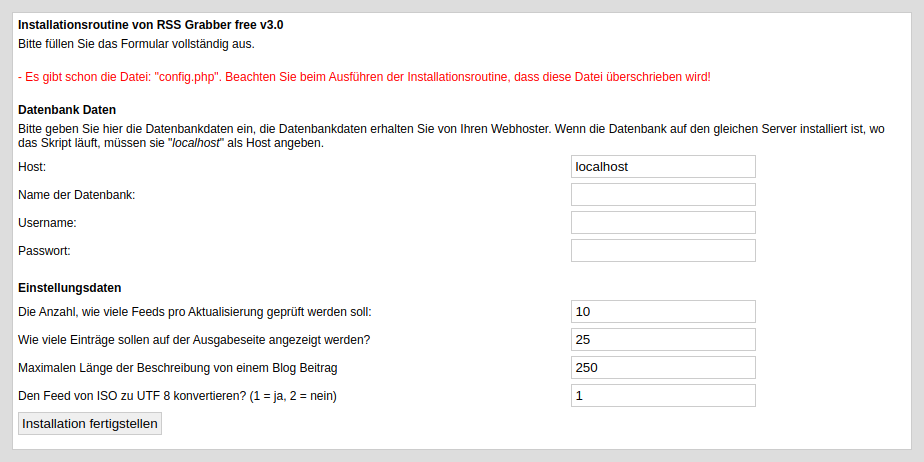
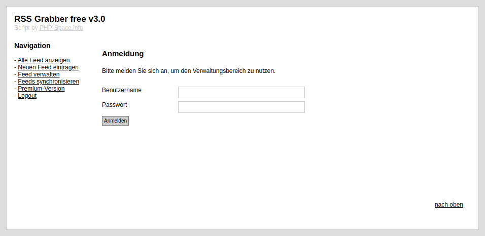
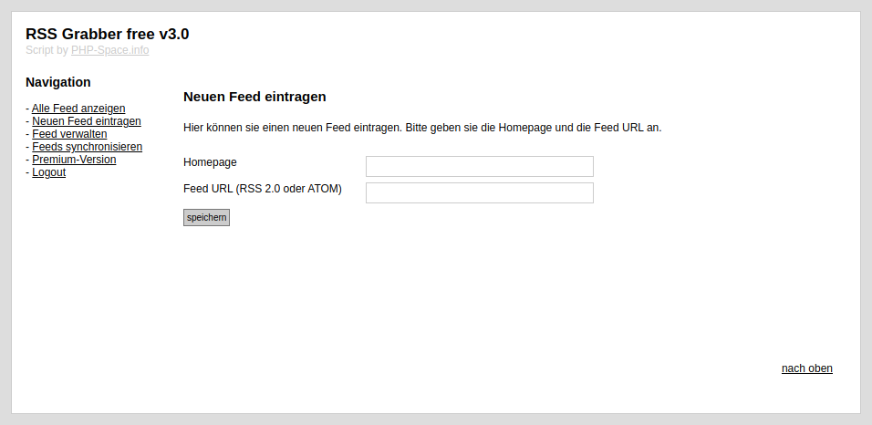
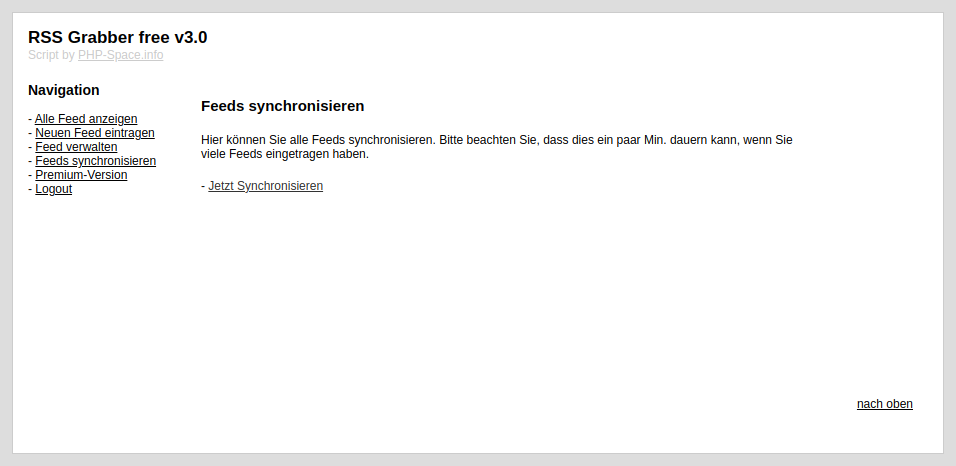
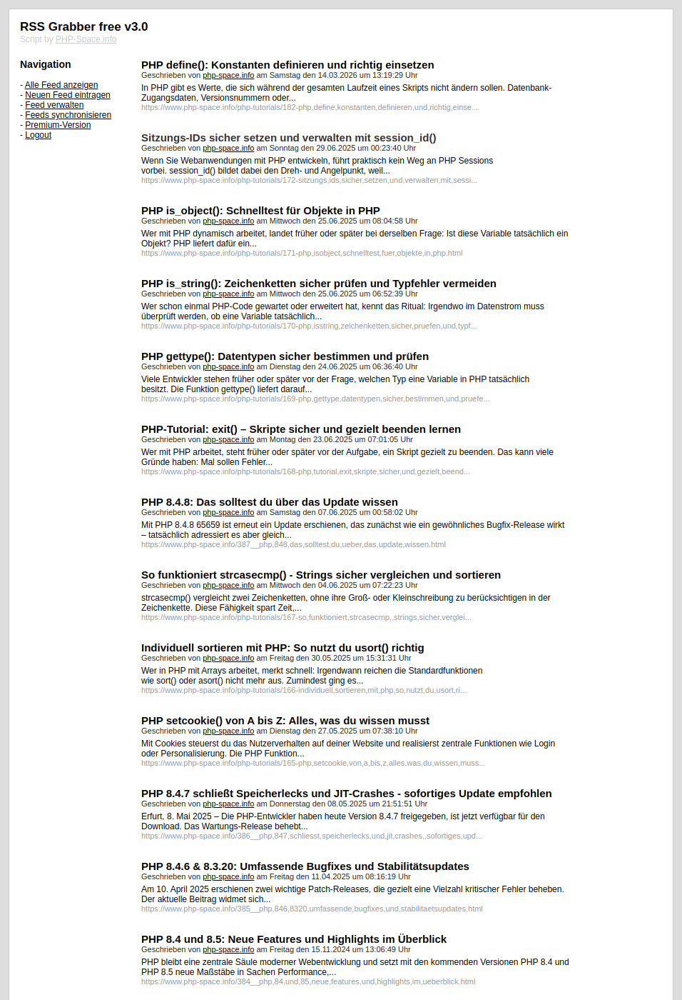
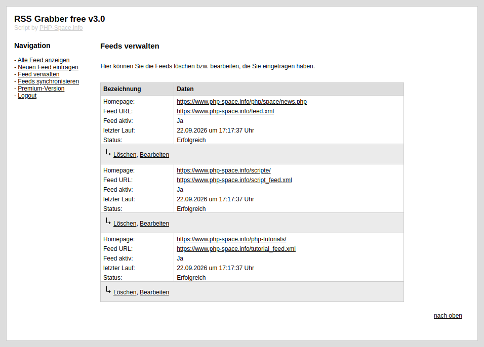

Die Einsatzgebiete sind bei dem RSS Grabber sehr vielseitig. Man kann dieses Tool dazu nutzen um sich auf dem Laufenden in verschiedenen Themengebiete zu halten. Die Verwaltung und Verwendung von RSS Grabber ist sehr einfach. Für die Installation von RSS Grabber benötigen sie kein großes Fachwissen und können dies auch als Laie umsetzen.
Die Version 3.0 ist eine gründliche Überarbeitung der Fassung von 2022. Wer von der Version 2.0 umsteigt, findet die gewohnte Oberfläche vor, darunter hat sich aber einiges geändert:
utf8mb4. Aus „für“ wird kein
„für“ mehr.Wir bieten den RSS Grabber kostenlos an, da nicht wirklich ein Markt in diesem Bereich existiert. Zusätzlich müssten wir Vertreter auf die Welt losschicken, damit überhaupt jemand eine kostenpflichtige RSS Grabber kauft. Dies möchten wir allen Leuten da draußen ersparen, daher wird das Script kostenlos angeboten.
Zusätzlich dient dieses Projekt als kleine Referenz der SchubertMedia in ihren Programmierkünsten. Natürlich müssen wir auch mehr oder weniger leben und möchten dieses Projekt weitestgehend euren Wünschen entsprechend weiterentwickeln. Hierzu bieten wir eine Premium-Version an.
mysqli, simplexml und iconv.
Alle drei gehören zur Standardausstattung und sind bei jedem gängigen Webhoster
vorhanden.allow_url_fopen muss eingeschaltet sein, sonst kann das Script die
Feeds nicht abrufen.utf8mb4Auf unserer Webseite https://www.hosterplus.de bekommt ihr für zwei Euro monatlich PHP-fähigen Webspace mit einer MariaDB-Datenbank sowie einer eigenen Internetadresse und vielen weiteren Features.
Das Script wurde umfangreich auf diesem Speicherplatz getestet und entsprechend angepasst. Natürlich läuft das Script auch auf anderen Webhosting-Anbietern.
utf8mb4./rss-grabber/.inc schreiben darf.
Dort wird bei der Installation die Datei config.php angelegt. Wie Sie
die Rechte setzen, steht im nächsten Abschnitt.www.ihre-domain.de/rss-grabber/install/
auf und füllen Sie das Formular vollständig aus. Die Routine legt die Tabellen
feeds, feeds_post und admin an und schreibt
die Konfigurationsdatei.
install vom Server. Solange es erreichbar ist, kann jeder Ihre
Installation überschreiben.www.ihre-domain.de/rss-grabber/ auf und melden Sie sich an.
Der Standardzugang lautet Benutzer admin, Passwort
admin.
php -r "echo password_hash('IHR-NEUES-PASSWORT', PASSWORD_DEFAULT);",
und tragen Sie ihn in der Tabelle admin in die Spalte
password_hash ein. Das geht in jeder Datenbankverwaltung wie phpMyAdmin.
Wenn Ihnen die Installation zu aufwendig ist, können Sie unseren Installationsservice unter der Adresse bestellen: https://www.php-space.info/script-installation-service/
Der Ordner inc muss während der Installation beschreibbar sein. Bei den
meisten Webhostern ist das bereits der Fall, weil die Dateien Ihnen gehören. Erst wenn
die Installationsroutine meldet, dass sie die Konfigurationsdatei nicht anlegen kann,
müssen Sie selbst eingreifen.
Gehen Sie dabei in dieser Reihenfolge vor:
inc. Hilft, wenn der Webserver
unter einer anderen Kennung als Ihr FTP-Zugang läuft, aber zur selben Gruppe
gehört.Die Rechte ändern Sie am einfachsten im FTP-Programm über den Menüpunkt „Datei-Zugriffsrechte“ beziehungsweise „File Permissions“. Über die Kommandozeile geht es so:
ftp aaa.bbb.ccc.ddd # <- aaa.-.ddd ist die FTP-Server-IP-Adresse user: _ # <- Benutzername eingeben password: _ # <- Kennwort eingeben pwd # > zeigt das "working directory", normal "/" quote site chmod 755 /html/rss-grabber/inc # Berechtigungen in Oktal: # 7 - 111 - rwx # 5 - 101 - r-x # 4 - 100 - r--
Falls Sie einen Shell-Zugang haben, genügt chmod 755 inc.
Nach der Anmeldung führen vier Menüpunkte durch das Script. In der Reihenfolge, in der Sie sie beim ersten Mal brauchen:
1. Neuen Feed eintragen. Sie geben die Adresse der Webseite und die Adresse des Feeds an. Beide finden Sie auf der jeweiligen Seite, der Feed ist dort meist mit dem orangefarbenen RSS-Symbol verlinkt. Das Script erkennt selbst, ob es sich um einen RSS-2.0- oder einen Atom-Feed handelt.

2. Feeds synchronisieren. Erst dieser Schritt holt die Beiträge ab. Die Seite arbeitet die eingetragenen Feeds nacheinander ab und meldet, was sie gefunden hat. Wie viele Feeds ein Lauf abholt, haben Sie bei der Installation festgelegt.

3. Alle Feeds anzeigen. Hier stehen die gesammelten Beiträge nach Datum sortiert. Weitere Beiträge werden automatisch nachgeladen, sobald Sie ans Ende der Seite scrollen. Diese Seite ist die einzige, die auch ohne Anmeldung erreichbar ist – sie ist für Ihre Besucher gedacht.

4. Feed verwalten. Die Übersicht zeigt zu jedem Feed, wann er zuletzt abgefragt wurde und ob das geklappt hat. Von hier aus ändern oder löschen Sie einen Eintrag. Steht bei einem Feed dauerhaft ein Fehler, prüfen Sie die hinterlegte Feed-Adresse im Browser.

Damit neue Beiträge regelmäßig ankommen, sollten Sie die Synchronisierung nicht von Hand anstoßen, sondern einen Cronjob einrichten, der die Seite in festen Abständen aufruft. In der kostenlosen Fassung ist das eine manuelle Einrichtung bei Ihrem Webhoster; die Premium-Version bringt die Cronjob-Unterstützung bereits mit.
Ein Update ist kein Ersetzen einzelner Dateien. Gehen Sie so vor:
inc/config.php: Zugangsdaten zur Datenbank und die vier Werte zu
Feeds, Einträgen und Länge der Beschreibung.java/prototype.js, java/jQuery.js
und java/jquery-1.4.2.min.js werden nicht mehr gebraucht und sollten
vom Server gelöscht werden.install/ erneut auf und geben Sie dieselben
Datenbankdaten wie bisher an. Vorhandene Tabellen bleiben erhalten, die neue
Tabelle admin für die Anmeldung kommt hinzu.utf8mb4 um, falls sie
noch auf latin1 läuft. Neue Beiträge speichert die Version 3.0
korrekt; bereits vorhandene Beiträge mit falsch abgelegten Umlauten werden dadurch
nicht rückwirkend richtig. Wenn Sie den Altbestand nicht brauchen, ist das Löschen
der Tabelle feeds_post und ein neuer Synchronisierungslauf der
einfachste Weg.install und ändern Sie
das Standardpasswort.admin/admin ist öffentlich bekannt.install gelöscht halten, auch nach einem Update.inc/config.php enthält Ihre Datenbank-Zugangsdaten. Sie
sollte nicht direkt abrufbar sein; im Auslieferungszustand sorgt die mitgelieferte
.htaccess dafür.https. Sonst geht Ihr Passwort im
Klartext über die Leitung.| Beobachtung | Ursache und Lösung |
|---|---|
Der Aufruf landet immer wieder bei install/ |
Die Datei inc/config.php fehlt. Die Installationsroutine konnte sie
nicht schreiben – Schreibrechte prüfen und die Routine erneut aufrufen. |
| „Datenbankverbindung nicht möglich“ | Zugangsdaten in inc/config.php prüfen. Liegt die Datenbank auf
demselben Server, lautet der Host in der Regel localhost. |
| Umlaute erscheinen als kryptische Zeichen | Datenbank und Tabellen müssen auf utf8mb4 stehen. Bestehende
Beiträge werden durch die Umstellung nicht rückwirkend korrigiert. |
| Ein Feed liefert keine Beiträge | Feed-Adresse im Browser aufrufen: Kommt dort XML an? Ist die Seite nur über
https erreichbar? Und ist allow_url_fopen auf Ihrem
Webspace eingeschaltet? |
| Beim Scrollen wird nichts nachgeladen | JavaScript im Browser eingeschaltet? Die Beiträge sind auch ohne Nachladen vollständig über die Seitenzahlen erreichbar. |
| Die Installationsroutine meldet die PHP-Version | Der Webspace läuft mit einer älteren PHP-Version. In der Verwaltung Ihres Hosters auf 8.5 oder höher umstellen. |
| Nach dem Anmelden geht es sofort zurück zum Anmeldeformular | Der Server kann keine Sitzungen speichern. Prüfen Sie, ob das Sitzungsverzeichnis von PHP beschreibbar ist, oder fragen Sie Ihren Hoster. |
Für jeglichen Schaden, der Ihnen durch die Benutzung dieses Skriptes entsteht, übernehmen wir keine Haftung oder juristische Verantwortung. Das Script wurde gewissenhaft und sorgfältig auf den neuesten Standard programmiert. Natürlich sind wir auch nur Menschen und machen daher Fehler. Wenn Ihnen ein Fehler auffällt, so nutzen Sie bitte unser Supportforum, um diesen zu melden. Wir werden uns dann so schnell wie möglich darum kümmern.
Der Copyright-Hinweis darf nicht entfernt werden. Eine Premium-Version (ohne Copyright-Hinweis) können Sie unter https://www.php-space.info/script-erweiterung-bestellen/ für einmalig 9,95 € inkl. 19 % MwSt. erwerben. Mit dem Erwerb unterstützen Sie uns in der Weiterentwicklung und sichern den Fortbestand des Projekts.
Sollten Sie noch Fragen haben, stehen wir Ihnen jederzeit gerne zur Verfügung. Bei Fragen zum Script nutzen Sie bitte das Support-Forum. Ein Support per E-Mail wird nicht angeboten.
Support-Forum: https://www.php-space.info/forum/
Wenn Sie Vorschläge zu dem Script beziehungsweise Kritik haben, so nutzen Sie bitte unser Supportforum. Wir stehen Ihnen jederzeit gern zur Verfügung und freuen uns über jeden Vorschlag. Beachten Sie hierbei: ohne Verbesserungsvorschläge können wir auch nicht Ihre Wünsche umsetzen. Daher nehmen Sie sich auch ein wenig die Zeit, um einen Vorschlag im Forum zu veröffentlichen.
Beachten Sie bei der Auswahl eines Webhosters, dass dieser für Sie eine Sicherung der Datenbank regelmäßig anfertigt. Es gibt zum Sichern der Datenbank unterschiedliche Backup-Tools, die diesen Job für Sie auch automatisch erledigen.
Denn es wird nichts Schlimmeres geben, als einen Ausfall und einen Verlust der gesamten Daten. Es ist immer tragisch, wenn angesammelte Daten verloren gehen. Daher machen Sie sich Gedanken, wie Sie eine Datensicherung umsetzen. Bei Fragen hierzu können Sie natürlich auch bei uns im Forum nachfragen oder uns entsprechend beauftragen.
Ein zweiter Punkt betrifft die Menge: Jeder Synchronisierungslauf legt neue Beiträge
ab, gelöscht wird dabei nichts. Wer viele Feeds eingetragen hat, sollte gelegentlich
einen Blick auf die Größe der Tabelle feeds_post werfen und alte Beiträge
entfernen.
Zusätzlich sollten Sie in regelmäßigen Abständen auf unserer Webseite schauen. Wir veröffentlichen in unregelmäßigen Abständen neue Versionen. Hierbei geben wir an, welche Fehler im Script behoben wurden. Sollte hierbei ein kritischer Fehler enthalten gewesen sein, müssen Sie das Update so schnell wie möglich einspielen.
Benötigen Sie eine Erweiterung für das Script oder eine individuelle Programmierdienstleistung? Wenn ja, so nehmen Sie mit uns Kontakt auf und wir unterbreiten Ihnen ein entsprechendes Angebot.